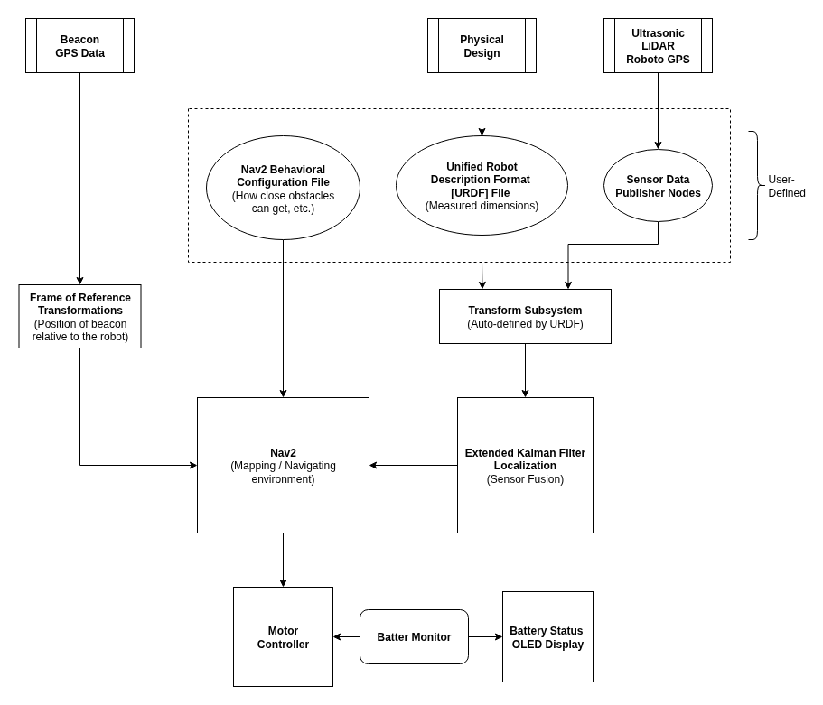

ROS2
Overview
ROS2 is the main software framework for the robot. It handles message passing, timing, and modularity. Each sensor, controller, and algorithm runs as a ROS2 node. These nodes will use one of the following communication methods provided by the framework:
Topics are used for continuous streams of data. Nodes can publish messages via topics and nodes can subscribe to messages via topics.
Services are used for call-and-response communication. Many nodes can act as the service client, each capable of sending requests to the node acting as the service server.
Actions are used for long-term communications that consist of a goal, feedback, and a result. One node acts as the action server that responds to requests about the goal and result, in addition to providing feedback information to the action client, which is another node that sends out the information requests.
Architectural Block Diagram
{kind=link}

Overview of ROS2 Setup
Data Collection
The first step to any autonomous system is to collect all relevant sensor data. In ROS2, we can represent each sensor as a node that is within a package, which is just a collection of source code, configuration files, and compiler rules. These nodes then publish their data to a topic, making it available to any nodes subscribed to said topic. ROS2 supports a wide variety of message types, many of which are conveniently crafted to carry specific sensor data. Message types used in RoboFlock are discussed further in Using RoboFlock’s Topics.
The naming conventions for topics is also important. A topic’s name can impact its place in the naming hierarchy. For example, LiDAR data is typically published to a topic named scan, which is considered to be relative (to its original package), whereas a topic named /scan is considered to be absolute (to the whole workspace). This can be useful when multiple packages are working with the same types of data but at different scopes. Topic names can also be remapped, which is especially useful when working with internal ROS2 packages, such as the Robot Localization package. RoboFlock generally sticks to using absolute names and remappings to avoid conflicts. For more details on naming conventions, check out Topic and Service name mapping to DDS.
Transformations
An important concept to understand in ROS2’s navigation system is the frame of reference. Each component on the robot is considered to have its own frame of reference, which is a 3D space at which the component is the origin and the x, y, and z axes are aligned with the component’s front, left side, and top, respectively. REP 145 defines the conventions used for frame of references and IMU orientations.
In order for the sensor data to be used accurately, it needs to be in the robot’s frame of reference. Let’s say that RoboFlock’s left ultrasonic sensor detects an object 1 meter in front of itself. If taken at face value, then this data is incorrect to the robot because the object is actually 1 meter to the robot’s left. The data needs to be transformed from the ultrasonic sensor’s frame of reference to the robot’s frame of reference.
Fortunately, ROS2 can handle the translational and rotational math needed to move data between different frames of reference; however, it still needs a starting point. This is where the URDF file comes in. It gives a spatial description of each component in the robot relative to the robot’s center of mass. Using the left ultrasonic example, we might describe its translational offset as being 10 centimeters above and 15 centimeters to the left of the robot’s center, and its rotational offset would be 90 degrees about the z-axis. The file can be manually written or automatically generated from CAD models using tools such as LIST CAD-URDF TOOL HERE. For more details on the URDF file, check out Creating the URDF.
Sensor Fusion
So now we have all our sensor data publishing to their respective topics and all physical aspects of the robots defined in a URDF file. The next step for ROS2 to perform is fusing all this data together so that calculations for the motor drivers can be made. There are 15 variables that ROS2 cares about:
x, y, z positions
roll, pitch, and yaw
x, y, z velocities
change in roll, pitch, and yaw
x, y, z accelerations
Since RoboFlock is (currently) only concered with planar motion, we can disregard any roll, pitch, or z-axis values. The remaining variables are ultimately controlled by how the sensor fusion is configured. The robot_localization package processes sensor data needed to understand the robot’s physical location in the environment. In the case of RoboFlock, this data comes from the IMU, LiDAR scanner, and GPS module. The result is an odometry message that contains information on the robot’s frame of reference, position on the global map, linear velocity, and angular velocity. This updates the transform between the global frame of reference and the robot’s frame of reference, which will be the main transform that data is moved through when navigational calculations are made.
TL;DR
Publish sensor data to a topic
Define the robot’s spatial characteristics
Configure which data is getting fused
Configure